Claudia Galindo
FAQ'S
01.¿Qué es un Retoque de Tinte?
Lo utilizamos para tapar canas o cambiar el tono de base.
Lo utilizamos para tapar canas cuando tienen pocas y de manera localizada.
03. ¿Qué es un baño de color? y ¿Cuándo hacerlo?
Para matizar algún tono o reflejo no deseado. Regresando el tono y brillo original del diseño de color.
Sirve para oscurecer sin necesidad de aplicar un tinte completo.
Dura aproximadamente 30 lavadas
Se recomienda aplicarlo cada mes y medio, entre citas de color.
Nota: NO ACLARA.
Tiempo aprox. 1 hora
04.¿Qué es un diseño de color?
Diseños para aclarar el cabello y crear efectos. Se realizan con tinte o con decoloración.
Influye mucho el tono actual, el estado actual del cabello y el objetivo para el resultado.
Se recomienda cada 3 a 6 meses según el tipo de diseño.
Tiempo aproximado. 3 horas
05. ¿Qué es un diseño de color de frente y coronilla?
Diseños para aclarar el cabello y crear efectos. Se realizan con tinte o con decoloración.
Se realiza solamente la parte de enfrente y la coronilla (que tapa el cabello de abajo)
Ayudan a simular un color completo recién hecho.
Se pueden intercalar y hacer diseño de color completo y el siguiente frente y coronilla y luego otra vez completo.
Se recomienda cada 3 a 6 meses según el tipo de diseño.
Tiempo aproximado. 2hrs 30min
06.¿Qué es un diseño de color localizado? y ¿Cuándo hacerlo?
Diseños para aclarar el cabello y crear efectos. Se realizan con tinte o con decoloración.
De 10-15 aluminios aproximadamente y lo usamos para subir el "face framing" y hacer retoques rápidos.
Se recomienda cada 2 a 4 meses según el tipo de diseño.
Tiempo Aproximado. 2 horas
07.¿Qué Tratamientos manejan?
Mucota - es un tratamiento que repara y reconstruye tu cabello, ademas de aportar hidratación, le da a tu cabello luz, brillo y fuerza.
Acidic Concentrate - Ayuda a fortalecer los enlaces debilitados y mejora la fuerza (reduce el quiebre en un 56%) y resistencia del cabello especialmente después del color. Sella la cutícula, previniendo el deslave.
Botox Capilar - refuerza la fibra del cabello, además aporta hidratación y nutre, en profundidad, aportando brillo al cabello. Quita lo “esponjado” sin alisar y sin perjudicar la salud del cabello.
Ampolleta Nashi - Suero de proteínas que sella la cutícula del cabello y mantiene el color por mas tiempo. Aporta brillo y suavidad al cabello.
Deep Infusion Nashi - Tratamiento de nutrición e hidratación profunda. Previene las puntas abiertas y el frizz.
Nashi Filler Therapy - Proteinas esenciales del cabello.
Brinda fuerza y resistencia al cabello
Hidrata y elimina el frizz
Da elasticidad al cabello debilitado
08.¿Cuánto tiempo antes es recomendable agendar mi cita de diseño de color?
Recomendamos hacer citas con 2 meses de anticipación en caso de color, para las demás con 2 o 3 semanas antes.
Agenda
una cita
Plaza Chipinque
L—208 & 209
Av. Manuel Gómez Morín #938,
San Pedro Garza García, NL 66250
Martes a Viernes
10:00 — 19:30 hrs
Sábado
09:00 — 18:00 hrs
Domingo & Lunes
Estudio Cerrado


Claudia Galindo Studio ©2025